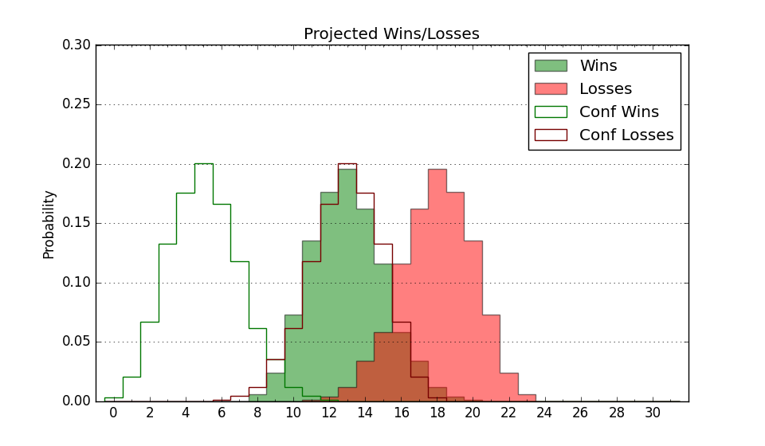

| Home | Game Probabilities | Conferences | Preseason Predictions | Odds Charts | NCAA Tournament |
| City: | Stillwater, Oklahoma | |
| Conference: | Big 12 (1st)
| |
| Record: | 0-0 (Conf) 7-5 (Overall) | |
| Ratings: | Comp.: 7.5 (102nd) Net: 6.1 (109th) Off: 104.6 (149th) Def: 98.5 (93rd) SoR: 0.4 (165th) |
| Remaining | ||||||
|---|---|---|---|---|---|---|
| Date | Opponent | Win Prob | Pred. | |||
| 1/3 | Chicago St. (296) | 92.8% | W 74-57 | |||
| 1/6 | Baylor (13) | 24.0% | L 72-80 | |||
| 1/9 | @ Texas Tech (48) | 18.7% | L 64-74 | |||
| 1/13 | @ Iowa St. (9) | 7.6% | L 61-79 | |||
| 1/16 | Kansas (14) | 25.2% | L 67-75 | |||
| 1/20 | @ Kansas St. (91) | 33.2% | L 66-71 | |||
| 1/23 | TCU (32) | 38.3% | L 72-75 | |||
| 1/27 | West Virginia (118) | 71.0% | W 72-66 | |||
| 1/30 | @ Kansas (14) | 9.0% | L 62-79 | |||
| 2/3 | Kansas St. (91) | 62.8% | W 70-67 | |||
| 2/6 | @ Houston (1) | 2.7% | L 50-74 | |||
| 2/10 | @ Oklahoma (33) | 15.6% | L 63-75 | |||
| 2/17 | BYU (4) | 14.8% | L 66-78 | |||
| 2/21 | @ Cincinnati (47) | 18.2% | L 66-77 | |||
| 2/24 | Oklahoma (33) | 38.6% | L 67-71 | |||
| 2/28 | UCF (71) | 53.6% | W 69-68 | |||
| 3/2 | @ Texas (34) | 15.9% | L 64-75 | |||
| 3/5 | Texas Tech (48) | 43.9% | L 68-70 | |||
| 3/9 | @ BYU (4) | 4.8% | L 61-83 | |||
| Previous | Game Score | |||||
| Date | Opponent | Win Prob | Result | Off | Def | Net |
| 11/6 | Abilene Christian (238) | 87.0% | L 59-64 | -28.1 | 0.5 | -27.6 |
| 11/12 | Sam Houston St. (244) | 87.7% | W 85-70 | 11.8 | -13.9 | -2.1 |
| 11/16 | (N) St. Bonaventure (62) | 36.6% | L 64-66 | 2.1 | -4.4 | -2.3 |
| 11/17 | (N) Notre Dame (151) | 65.6% | L 64-66 | -9.6 | -4.2 | -13.7 |
| 11/20 | New Orleans (313) | 94.0% | W 96-68 | 19.1 | -8.4 | 10.7 |
| 11/24 | Houston Baptist (354) | 97.3% | W 92-65 | 3.2 | 1.0 | 4.2 |
| 11/30 | Creighton (7) | 20.7% | L 65-79 | -3.7 | -10.6 | -14.3 |
| 12/5 | @Southern Illinois (94) | 33.5% | L 68-70 | 5.8 | -5.5 | 0.3 |
| 12/10 | (N) Tulsa (205) | 73.2% | W 72-57 | -8.3 | 16.8 | 8.6 |
| 12/17 | Oral Roberts (160) | 79.2% | W 81-60 | 8.3 | 9.6 | 17.9 |
| 12/20 | Wofford (188) | 82.5% | W 76-70 | -10.4 | 1.0 | -9.4 |
| 12/31 | South Carolina St. (339) | 95.8% | W 86-70 | -1.8 | -4.6 | -6.4 |
| Stats & Trends | |||||
|---|---|---|---|---|---|
| Current | Day | Week | Month | Season | |
| Composite | 7.5 | -0.0 | -0.8 | +0.6 | -5.4 |
| Comp Rank | 102 | -- | -13 | -1 | -41 |
| Net Efficiency | 6.1 | -0.0 | -0.7 | +3.6 | -- |
| Net Rank | 109 | -- | -6 | +40 | -- |
| Off Efficiency | 104.6 | -0.0 | +0.2 | -0.1 | -- |
| Off Rank | 149 | +1 | +8 | -2 | -- |
| Def Efficiency | 98.5 | -0.0 | -0.9 | +3.8 | -- |
| Def Rank | 93 | -- | -12 | +77 | -- |
| SoS Rank | 318 | -- | -34 | -39 | -- |
| Exp. Wins | 13.0 | -0.0 | -0.3 | +0.5 | -4.3 |
| Exp. Conf Wins | 5.1 | -0.0 | -0.3 | +0.2 | -1.8 |
| Conf Champ Prob | 0.0 | -- | -0.0 | -- | -0.9 |

| Advanced Stats | ||
|---|---|---|
| Stat | Value | Rank |
| Off Eff FG % | 0.547 | 44 |
| Off Ast Ratio | 0.175 | 34 |
| Off ORB% | 0.290 | 128 |
| Off TO Rate | 0.172 | 313 |
| Off FT Ratio | 0.268 | 313 |
| Def Eff FG % | 0.479 | 104 |
| Def Ast Ratio | 0.112 | 20 |
| Def ORB% | 0.228 | 42 |
| Def TO Rate | 0.157 | 131 |
| Def FT Ratio | 0.298 | 118 |